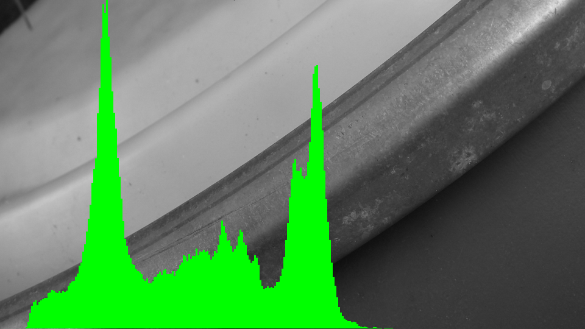

public static PixelColor RGB_to_YCbCr(PixelColor p){
int Y = (int)(0.299 * p.r +0.587 * p.g + 0.114 * p.b);
int Cb = (int)(-0.169 * p.r -0.331 * p.g + 0.5 * p.b + 128);
int Cr = (int)(0.5 * p.r -0.419 * p.g - 0.081 * p.b + 128);
return new PixelColor(Y, Cb, Cr);
}
public static PixelColor YCbCr_to_RGB(PixelColor p){
double Y = p.r;
double Cb = p.g;
double Cr = p.b;
int r = (int) (Y + 1.403*(Cr - 128));
int g = (int) (Y -0.344*(Cb-128) - 0.714*(Cr-128));
int b = (int) (Y + 1.773*(Cb-128));
r = Math.max(0, Math.min(255, r));
g = Math.max(0, Math.min(255, g));
b = Math.max(0, Math.min(255, b));
return new PixelColor(r, g, b);
}
a)
Helligkeit ist ein Attribut bei dem eine Oberfläche mehr oder wenig licht vorhanden ist. Die Fähigkeit des Gehirns Helligkeit wahrzunehmen ist unmöglich definierbar, deswegen definiert das CIE (Commission Internationale de L'Éclairage) eine weitere Größe der Luminance(=Y), welche definiert ist durch radialkraft gewichtet bei Spektralsensibilität. Das Auge ist sehr sensibel zu Grün, etwas weniger sensibel zu Rot und sehr unsensibel gegenüber Blau. Deshalb ist das RGB-Farbspektrum irreführend und führt zur Falschen annahme dass (r+g+b)==Helligkeit, was jedoch nicht der Fall ist da die Sensibilität des Auges nicht in Betracht gezogen wird. Hingegen ist Y also die Luminance eine direkt verlinkte variable, die über einen "Standart Observer" eine wellenlänge von 555nm annimmt und damit eine gewichtete Funktion ausführt welche uns Luminance liefert (*siehe oben). Zudem ist das menschliche Auge äußerst empfindlich zu veränderungen des genannten Y, was es besonders nützlich macht wenn man einen Farbraum besitzt der Luminance als einzelne Variable verwendet. Cb und Cr werden als Chroma bezeichnet sie beschreiben Farbe indem sie die Präsenz und Absenz von Blau beschreiben (Cb) bzw von Rot(Cr). YCbCr wird normalerweise in digitalen Videos, jpeg, jpeg 20000 und mpeg verwendet.
b) RGB Seperate Channel Bilder
Source code:
public static BmpImage red_channel_only(BmpImage bmp){
for(int y = 0; y < bmp.image.getHeight(); y++) {
for (int x = 0; x < bmp.image.getWidth(); x++) {
PixelColor pixel = bmp.image.getRgbPixel(x, y);
pixel.g = 0;
pixel.b = 0;
}
}
return bmp;
}
public static BmpImage green_channel_only(BmpImage bmp){
for(int y = 0; y < bmp.image.getHeight(); y++) {
for (int x = 0; x < bmp.image.getWidth(); x++) {
PixelColor pixel = bmp.image.getRgbPixel(x, y);
pixel.r = 0;
pixel.b = 0;
}
}
return bmp;
}
public static BmpImage blue_channel_only(BmpImage bmp){
for(int y = 0; y < bmp.image.getHeight(); y++) {
for (int x = 0; x < bmp.image.getWidth(); x++) {
PixelColor pixel = bmp.image.getRgbPixel(x, y);
pixel.r = 0;
pixel.g = 0;
}
}
return bmp;
}
Nur Rot (Grün und Blau auf null gesetzt):
Nur Grün (andere auf null gesetzt):
Nur Blau (andere auf null gesetzt):
c) Y,Cb,Cr Seperate Channel Bilder
Source code:
public static PixelColor RGB_to_YCbCr(PixelColor p){
int Y = (int)(0.299 * p.r +0.587 * p.g + 0.114 * p.b);
int Cb = (int)(-0.169 * p.r -0.331 * p.g + 0.5 * p.b + 128);
int Cr = (int)(0.5 * p.r -0.419 * p.g - 0.081 * p.b + 128);
return new PixelColor(Y, Cb, Cr);
}
public static BmpImage lumin(BmpImage bmp){
for(int y = 0; y < bmp.image.getHeight();y++) {
for (int x = 0; x < bmp.image.getWidth(); x++) {
PixelColor p = bmp.image.getRgbPixel(x, y);
double luminance = 0.299 * p.r * 0.587 * p.g * 0.114 * p.b;
int l = (int) Math.max(0, Math.min(255, luminance));
bmp.image.setRgbPixel(x, y, new PixelColor(l, l, l));
}
}
return bmp;
}
Nur Y (Brightness):
Luminance on all channels:

Jetzt die Seperaten Cb, Cr Bilder .
Source code:
public static BmpImage chromacity_blue(BmpImage bmp){
for(int y = 0; y < bmp.image.getHeight();y++) {
for (int x = 0; x < bmp.image.getWidth(); x++) {
PixelColor p = bmp.image.getRgbPixel(x, y);
int red = (int)(-0.169 * p.r +128);
int green = (int)(-0.331 * p.g +128);
int blue = (int)(0.5 * p.b +128);
int cb = red + green + blue - 256;
int chromacity_blue = Math.max(0, Math.min(255, cb));
//bmp.image.setRgbPixel(x, y, new PixelColor(chromacity_blue, chromacity_blue, chromacity_blue));
bmp.image.setRgbPixel(x, y, new PixelColor(red, green, blue));
}
}
return bmp;
}
public static BmpImage chromacity_red(BmpImage bmp){
for(int y = 0; y < bmp.image.getHeight();y++) {
for (int x = 0; x < bmp.image.getWidth(); x++) {
PixelColor p = bmp.image.getRgbPixel(x, y);
int red = (int)(0.5 * p.r +128);
int green = (int)(-0.419 * p.g +128);
int blue = (int)(-0.081 * p.b +128);
int cr = red + green + blue - 256;
int chromacity_red = Math.max(0, Math.min(255, cr));
//bmp.image.setRgbPixel(x, y, new PixelColor(chromacity_red, chromacity_red, chromacity_red));
bmp.image.setRgbPixel(x, y, new PixelColor(red, green, blue));
}
}
return bmp;
}
Nur Cb und Cr Manmade:
Nur Cb und Cr Nature:
d) YCbCr Bilder -> rekonstruktion zu RGB
Source Code:
public static PixelColor YCbCr_to_RGB(PixelColor p){
double Y = p.r;
double Cb = p.g;
double Cr = p.b;
int r = (int) (1.403 * (Cr - 128) + Y);
int g = (int) ((-0.344 * (Cb - 128))+(-0.714 *(Cr-128)) + Y);
int b = (int) ( 1.773*(Cb-128) + Y);
r = Math.max(0, Math.min(255, r));
g = Math.max(0, Math.min(255, g));
b = Math.max(0, Math.min(255, b));
return new PixelColor(r, g, b);
}
Originales Bild Manmade:
Rekonstruiertes Bild Manmade:
Originales Bild Nature:
Rekonstruiertes Bild Nature:
Aufgabe 2 Brightness Histogramm
Helligkeitshäufigkeiten zur Textdatei schreibe, Source Code:
public static void save_histo_data(int[] data, String destination) throws IOException{
FileWriter writer = new FileWriter( destination);
for (int d : data){
writer.write(data+"\r\n");
}
writer.close();
System.out.println("Saved Histogramm data [line by line].");
}
public static double remap(double i, double lb, double ub, double frm, double to){
return (i - lb) / (ub - lb) * (to - frm) + frm;
}
public static BmpImage rect(BmpImage bmp, int x, int y, int w, int h, PixelColor color){
for(int dy = y; dy < y+h; dy++) {
for (int dx = x; dx < x+w; dx++) {
bmp.image.setRgbPixel(dx,dy, color);
}
}
return bmp;
}
public static BmpImage Histogramm(BmpImage bmp, int[] datas){
//determine maxval
int maxVal = -1;
for (int i = 0; i< datas.length; i++){
int data = datas[i];
if (data > maxVal){
maxVal = data;
}
}
int col_width = (int)bmp.image.width/datas.length;
for (int i = 0; i< datas.length; i++){
int data = datas[i];
int col_height = (int)remap(data, 0, maxVal, 0, bmp.image.height-1);
rect(bmp, i * col_width, bmp.image.height-1 - col_height, col_width, col_height, new PixelColor(0,255,0));
}
for (int data : datas){ //hihi
}
return bmp;
}
public static int[] BrightnessHistogramm(BmpImage bmp){
//HashMap histogramm = new HashMap();
int[] histogramm = new int[256];
for(int y = 0; y < bmp.image.getHeight(); y++) {
for (int x = 0; x < bmp.image.getWidth(); x++) {
PixelColor pixel = bmp.image.getRgbPixel(x, y);
double brightness_of_pixel = perceived_brightness(pixel);//(pixel.r+pixel.g+pixel.b)/3.0; //naive...
histogramm[(int)brightness_of_pixel]++;
}
}
return histogramm;
}
Erstellt mit bmp.io, code oben, range[0-255] Helligkeiten und dessen aufkommen auf einer Skala mit einem vorher berechneten Maxwert.

Aufgabe 3 Brightness and Contrast
a) Mittlere Helligkeit des Monochromen Detailbildes aus Aufgabe 1c.) Y-Only Bildes. Berechne auch den Kontast des Bildes.
Source Code:
public static double perceived_brightness(PixelColor pixel){
return (0.2 * pixel.r) + (0.72 * pixel.g) + (0.07 * pixel.b);
}
public static double brightness(PixelColor p){
return (p.r+p.g+p.b)/3.0;
}
public static int MittlereHelligkeit(BmpImage bmp){
double total = 0;
for(int y = 0; y < bmp.image.getHeight(); y++) {
for (int x = 0; x < bmp.image.getWidth(); x++) {
PixelColor pixel = bmp.image.getRgbPixel(x, y);
total += brightness(pixel);
}
}
return (int)(total/(bmp.image.getWidth()*bmp.image.getHeight()));
}
public static int Kontrast(BmpImage bmp){
int mittlereHelligkeit = MittlereHelligkeit(bmp);
double total = 0;
for(int y = 0; y < bmp.image.getHeight(); y++) {
for (int x = 0; x < bmp.image.getWidth(); x++) {
PixelColor pixel = bmp.image.getRgbPixel(x, y);
total += Math.pow(brightness(pixel)-mittlereHelligkeit,2);
}
}
return (int)Math.sqrt(total/(bmp.image.getWidth()*bmp.image.getHeight()));
}
Nature:
Mittlere Helligkeit = 140
Kontrast = 77
Manmade:
Mittlere Helligkeit: 107
Kontrast: 49
b) Manipulation der Helligkeit durch add/sub der Werte h=[20, 40, 60, 80]; im 8-Bit Bereich bleiben (nicht größer als 2^8 -> clamp). Zudem Histogramm des hellsten und des dunkelsten Bildes
Source Code unter annahme das h einer der in b) gennanten Werte ist. Nature: [Oben links -80 Helligkeit -> +20] [links 20 Helligkeit -> +80]c) Erhöhe bzw. verringere den Kontrast durch Muliplikation mit den Faktoren k=(0.2, 0.4, 0.8, 1.0) und k=(1.5, 2.5, 5.0, 10.0). Was passiert bei Kontraständerung k < 0?
Source Code unter annahme das k einer der in c) genannten werte ist.
public static double brightness(PixelColor p){
return (p.r+p.g+p.b)/3.0;
}
public static PixelColor change_contrast(PixelColor p, double k){
double contrast_correction_factor = k;//259*(k+255)/255*(259-k);
double bright = brightness(p);
double red = contrast_correction_factor*(bright-128)+128;
double green = contrast_correction_factor*(bright-128)+128;
double blue = contrast_correction_factor*(bright-128)+128;
int r = (int)Math.max(0, Math.min(255, red));
int g = (int)Math.max(0, Math.min(255, green));
int b = (int)Math.max(0, Math.min(255, blue));
return new PixelColor(r, g, b);
}
public static BmpImage change_contrast(BmpImage bmp, double k){
for(int y = 0; y < bmp.image.getHeight(); y++) {
for (int x = 0; x < bmp.image.getWidth(); x++) {
PixelColor pixel = bmp.image.getRgbPixel(x, y);
bmp.image.setRgbPixel(x, y, change_contrast(pixel, k));
}
}
return bmp;
}
Nature:
[Oben links -80 Helligkeit -> +20]
[links 20 Helligkeit -> +80]